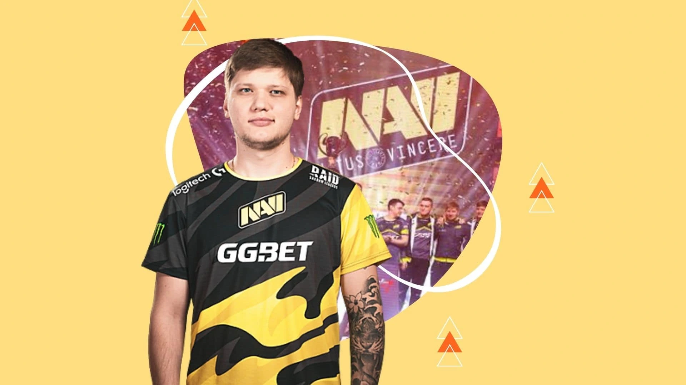

Oleksandr "s1mple" Kostyliev (born October 2, 1997) is a Ukrainian professional Counter-Strike: Global Offensive player who plays for Natus Vincere as the AWPer. Widely considered as one of the greatest and most accomplished CS:GO players of all time, he has won a record 21 HLTV MVP medals, a Major and an Intel Grand Slam trophy, among other numerous S-Tier trophies, and has been crowned as the best player of 2018 and 2021, and a runner-up for the best player of 2019 and 2020.
